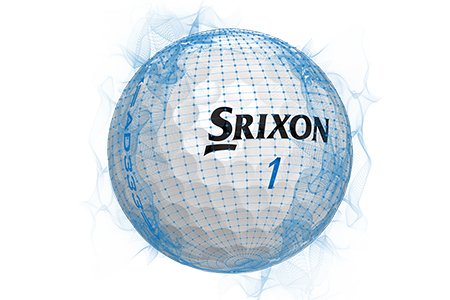
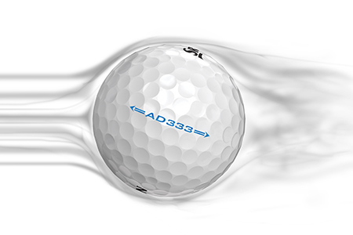
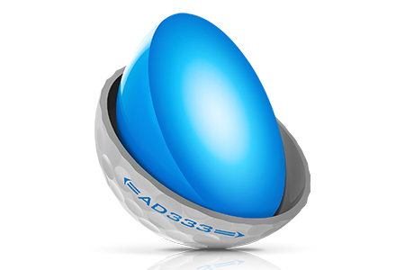

AD333 White
The 9th Generation
Now in its fifth generation, the Q-STAR from Srixon provides exceptional performance from tee to green. Enhanced with the FastLayer Core and new Spin Skin with SeRM, the new Q-STAR offers outstanding distance performance while maintaining excellent greenside spin.
TECHNOLOGY
Fastlayer core
Starts soft in the centre and gradually becomes firm around its outer edge, FastLayer delivers exceptional feel and ball speed. Player benefits: Maximum distance, faster ball speed, softer feel
New Spin Skin with SeRM
A coating with flexible molecular bonds digs deep into wedge and iron grooves, maximising spin for more control. Player benefits: Maximum spin, improved greenside control, more stopping power.
338 Speed Dimple Pattern
Less drag and more lift boosts overall distance and accuracy, even in the toughest wind conditions. Player benefits: Penetrating ball flight, improved distance, better consistency and control in the wind.
srixon AD333 Specs
| CONSTRUCTION | 2pc |
| COVER MATERIAL | Ionomer |
AVAILABLE COLORS
Pure White and Tour Yellow.
SRIXON Z-STAR XV PRICE
29,99 € / 32,99 CHF / 299 SEK / 24 £